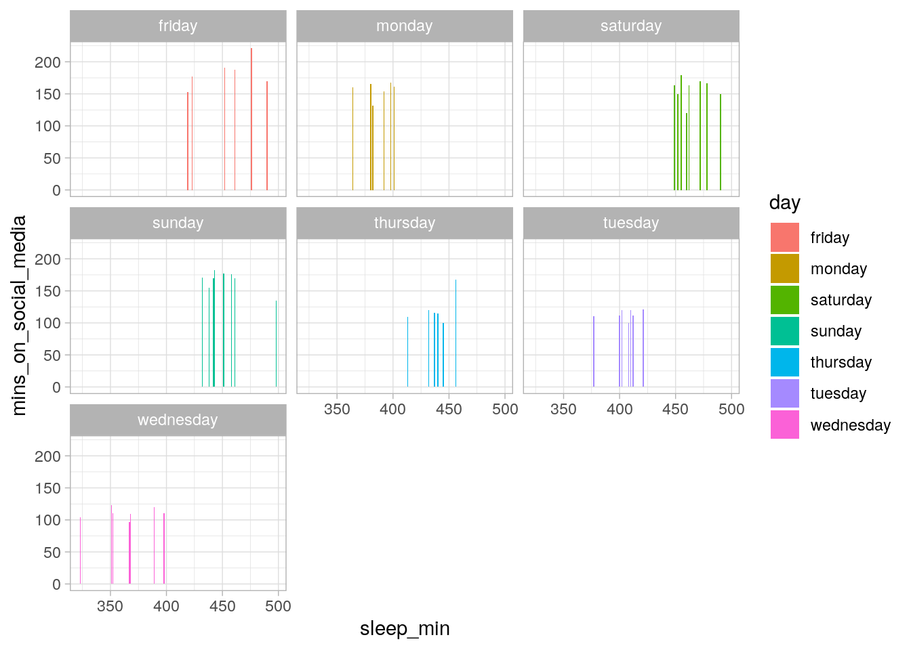
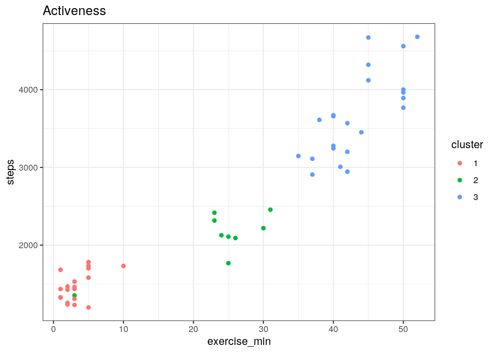
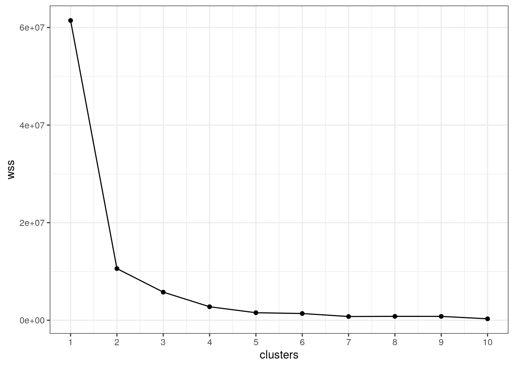

Introduction:
I decided to go with my own data, collected on my electronic devices, becasue I would like to see if there are any relationships between how much time I spend on social media, amount of steps walked per day, amount of time spent exercising per day, or amount of sleep per night, depending on the day/date. With how my schedule is now, I feel like I tend to "waste time" (Spend more time on social media and not workout, etc.) more on fridays to mondays, compared to tuesdays to thursdays (I only have classes to attend 3 days a week). I'm interested to see if I'm actually more productive on my busy days then when I am on my relax days.
Importing data
First, I downloaded mydata from my smart watch and iphone into my computer on google sheets, then I imported my data from google sheets into my computer as a CVS file. I then uploaded the files into r (webversion). Next I imported files into the program, where I was able to conduct my project. Next I ran "attach" in order for my newly imported files to be readable by the other codes.
library(readr)
Apple_screen_time_Sheet1 <- read.csv("Apple screen time - Sheet1.csv")
Apple_watch_stats_Sheet1 <- read.csv("Apple watch stats - Sheet1.csv")
#attach(Apple_screen_time_Sheet1)
#attach(Apple_watch_stats_Sheet1)
Tidying/Converting my data properly/Joining
In this chunk, I am converting my newly imported data into dataframes, by piping the name of my data files tino as.matrix function and then piping them into thee as.data.frame. I rename my new datasets as "Apple1" and "Apple2". Next I do a full join, combining them by the common variable "ID", and naming this new file "Combined_projectdat". Next, I had to converted all the variables into characters before I was able to convert only specific variables into numeric variables. I name the finalized dataset as "finaldata"
library(dplyr)
##
## Attaching package: 'dplyr'
## The following objects are masked from 'package:stats':
##
## filter, lag
## The following objects are masked from 'package:base':
##
## intersect, setdiff, setequal, union
Apple_screen_time_Sheet1 %>% as.matrix %>% as.data.frame -> Apple1
Apple_watch_stats_Sheet1 %>% as.matrix %>% as.data.frame -> Apple2
#Full joining data by common variable "date"
full_join(Apple1, Apple2, by="date") -> Combined_dat
Combined_dat %>% mutate_all(as.character) ->test
column<-c("mins_on_social_media", "steps", "exercise_min", "sleep_min")
test[, column] <- lapply(column, function(x) as.numeric(test[[x]]))
test->finaldata
head(finaldata)
## date mins_on_social_media steps exercise_min sleep_min day
## 1 08/15/2020 163 4321 45 462 saturday
## 2 08/16/2020 170 3452 44 442 sunday
## 3 08/17/2020 160 2109 25 380 monday
## 4 08/18/2020 112 1435 1 412 tuesday
## 5 08/19/2020 110 1236 2 352 wednesday
## 6 08/20/2020 115 1682 1 440 thursday
#Wide version of dataset:
library(tidyverse)
## ── Attaching packages ───────────────────────────────────────────────────────────────────────────────────────────────────────────────────────────────────────────── tidyverse 1.3.0 ──
## ✓ ggplot2 3.3.2 ✓ purrr 0.3.4
## ✓ tibble 3.0.3 ✓ stringr 1.4.0
## ✓ tidyr 1.1.1 ✓ forcats 0.5.0
## ── Conflicts ──────────────────────────────────────────────────────────────────────────────────────────────────────────────────────────────────────────────── tidyverse_conflicts() ──
## x dplyr::filter() masks stats::filter()
## x dplyr::lag() masks stats::lag()
finaldata %>% rownames_to_column() %>% gather(variable,value,-rowname) %>% spread(rowname,value) -> widedata
I decided to combine using the function "full_join" because I knew there was a common variable and that each X value would return Y values with no NAs. Before joining, I had to pipe my data, converting it into a matrix then data frame. Next I used the full_join function and combined them by the common variable "date". Next I converted all the varables except for "date" and "day" into numeric variables in order to be able to do the calculations in the future codes. I named the finalized data as "finaldata". Lastly, I used the gather() function in order to demonstrate what my data would look like wide instead of long, naming this dataset as widedata.
Wrangling Data
library(knitr)
finaldata %>% select(-day,-date) %>% summary %>% kable
|
Min. : 97.0 |
Min. :1198 |
Min. : 1.00 |
Min. :323.0 |
|
1st Qu.:118.0 |
1st Qu.:1465 |
1st Qu.: 3.00 |
1st Qu.:398.0 |
|
Median :153.0 |
Median :2218 |
Median :25.00 |
Median :432.0 |
|
Mean :146.2 |
Mean :2526 |
Mean :24.08 |
Mean :424.9 |
|
3rd Qu.:170.0 |
3rd Qu.:3510 |
3rd Qu.:41.50 |
3rd Qu.:455.5 |
|
Max. :221.0 |
Max. :4681 |
Max. :52.00 |
Max. :498.0 |
The table above summarizes the mean, median, min, max, 1st and 3rd quantile of each numeric variable, not grouped in any order.
#This new variable should be able to tell the reader how active I was on a particular day. The higher number will represent more active while lower will represent less active.
library(knitr)
finaldata %>% mutate(workout_intensity=exercise_min*steps)-> finaldata
#General summary statistics of all numeric variables NOT grouped in any particular way
#Mean of all variables
finaldata%>% select(-day,-date) %>% summarize(mean_media = mean(mins_on_social_media),
mean_sleep = mean(sleep_min),
mean_steps=mean(steps),
mean_exercise=mean(exercise_min),
mean_workoutintensity=mean(workout_intensity)) %>% kable
| 146.1961 |
424.8627 |
2525.98 |
24.07843 |
80477.84 |
#sd of all variables
finaldata%>% select(-day,-date)%>% summarize(sd_media = sd(mins_on_social_media),
sd_sleep = sd(sleep_min),
sd_steps=sd(steps),
sd_exercise=sd(exercise_min),
sd_workoutintensity=sd(workout_intensity))%>% kable
| 31.4611 |
40.44355 |
1108.284 |
19.05134 |
77997.64 |
#min of all variables
finaldata%>% select(-day,-date)%>%summarize(min_media = min(mins_on_social_media),
min_sleep = min(sleep_min),
min_steps=min(steps),
min_exercise=min(exercise_min),
min_workoutintensity=min(workout_intensity))%>% kable
#max of all variables
finaldata%>% select(-day,-date)%>%summarize(max_media = max(mins_on_social_media),
max_sleep = max(sleep_min),
max_steps=max(steps),
max_exercise=max(exercise_min),
max_workoutintensity=max(workout_intensity))%>% kable
#var of all variables
finaldata%>% select(-day,-date)%>%summarize(var_media = var(mins_on_social_media),
var_sleep = var(sleep_min),
var_steps=var(steps),
var_exercise=var(exercise_min),
var_workoutintensity=var(workout_intensity))%>% kable
| 989.8008 |
1635.681 |
1228294 |
362.9537 |
6083632283 |
In the data above, I created a new variable called "workout_intensity" by multiplying exercise_min and steps. My reasoning was that I tend to take more steps whenever I exercise for longer periods of time (and vice veras). I then created summary tables that includes the min,max,sd,var,and mean, of all my numeric variables. I used select(-day,-date) in order to not include those variables, as they were not numeric and would provide no useful information in this situation, and I used the summarize function in order to calcuate the mean summaries of each stated individual variable.
library(knitr)
#Mean of all variables grouped by day
finaldata%>% group_by(day) %>% summarize(mean_media = mean(mins_on_social_media),
mean_sleep = mean(sleep_min),
mean_steps=mean(steps),
mean_exercise=mean(exercise_min),
mean_workoutintensity=mean(workout_intensity)) %>% kable
## `summarise()` ungrouping output (override with `.groups` argument)
| friday |
184.2857 |
453.2857 |
3147.286 |
37.714286 |
120955.286 |
| monday |
157.8571 |
385.2857 |
2196.429 |
26.142857 |
57546.571 |
| saturday |
157.7500 |
464.7500 |
4249.125 |
47.125000 |
200840.250 |
| sunday |
167.0000 |
452.8750 |
3361.375 |
42.250000 |
143498.875 |
| thursday |
127.8571 |
439.8571 |
1571.286 |
3.857143 |
6378.429 |
| tuesday |
113.5714 |
404.2857 |
1440.000 |
3.000000 |
4478.286 |
| wednesday |
110.4286 |
364.0000 |
1350.857 |
2.571429 |
3449.571 |
#sd of all variables grouped by day
finaldata%>% group_by(day) %>% summarize(sd_media = sd(mins_on_social_media),
sd_sleep = sd(sleep_min),
sd_steps=sd(steps),
sd_exercise=sd(exercise_min),
sd_workoutintensity=sd(workout_intensity))%>% kable
## `summarise()` ungrouping output (override with `.groups` argument)
| friday |
21.116457 |
25.88252 |
541.3368 |
6.343350 |
33374.474 |
| monday |
12.601965 |
12.73727 |
235.6204 |
3.184785 |
10488.673 |
| saturday |
18.077215 |
14.14971 |
370.1361 |
4.015595 |
28872.878 |
| sunday |
15.156328 |
20.71878 |
327.9460 |
5.522680 |
32781.165 |
| thursday |
33.553085 |
14.93797 |
195.6431 |
3.184785 |
5716.675 |
| tuesday |
7.524563 |
13.86500 |
173.5511 |
1.632993 |
2871.365 |
| wednesday |
8.885515 |
25.16611 |
128.9993 |
1.272418 |
1586.710 |
#min of all variables grouped by day
finaldata%>% group_by(day) %>% summarize(min_media = min(mins_on_social_media),
min_sleep = min(sleep_min),
min_steps=min(steps),
min_exercise=min(exercise_min),
min_workoutintensity=min(workout_intensity))%>% kable
## `summarise()` ungrouping output (override with `.groups` argument)
| friday |
153 |
419 |
2127 |
24 |
51048 |
| monday |
132 |
364 |
1768 |
23 |
44200 |
| saturday |
120 |
449 |
3672 |
40 |
146880 |
| sunday |
135 |
432 |
2908 |
35 |
107596 |
| thursday |
100 |
413 |
1324 |
1 |
1324 |
| tuesday |
100 |
377 |
1231 |
1 |
1327 |
| wednesday |
97 |
323 |
1198 |
1 |
1328 |
#max of all variables grouped by day
finaldata%>% group_by(day) %>% summarize(max_media = max(mins_on_social_media),
max_sleep = max(sleep_min),
max_steps=max(steps),
max_exercise=max(exercise_min),
max_workoutintensity=max(workout_intensity))%>% kable
## `summarise()` ungrouping output (override with `.groups` argument)
| friday |
221 |
490 |
3659 |
42 |
149898 |
| monday |
170 |
401 |
2456 |
31 |
76136 |
| saturday |
179 |
490 |
4681 |
52 |
243412 |
| sunday |
182 |
498 |
3892 |
50 |
194600 |
| thursday |
200 |
456 |
1782 |
10 |
17320 |
| tuesday |
121 |
421 |
1734 |
5 |
8670 |
| wednesday |
123 |
398 |
1532 |
5 |
5990 |
#var of all variables grouped by day
finaldata %>% group_by(day) %>% summarize(var_media = var(mins_on_social_media),
var_sleep = var(sleep_min),
var_steps=var(steps),
var_exercise=var(exercise_min),
var_workoutintensity=var(workout_intensity))%>% kable
## `summarise()` ungrouping output (override with `.groups` argument)
| friday |
445.90476 |
669.9048 |
293045.57 |
40.238095 |
1113855497 |
| monday |
158.80952 |
162.2381 |
55516.95 |
10.142857 |
110012267 |
| saturday |
326.78571 |
200.2143 |
137000.70 |
16.125000 |
833643090 |
| sunday |
229.71429 |
429.2679 |
107548.55 |
30.500000 |
1074604791 |
| thursday |
1125.80952 |
223.1429 |
38276.24 |
10.142857 |
32680368 |
| tuesday |
56.61905 |
192.2381 |
30120.00 |
2.666667 |
8244738 |
| wednesday |
78.95238 |
633.3333 |
16640.81 |
1.619048 |
2517649 |
The tables above illustrates the mean,var,min,max, and sd of all the numeric variables in my data grouped by day.
The results gathered from the multiple summary tables tell me that I tend to be more active on fridays to mondays and less active on tuesdays to thursday, which make sense with my given schedule of having to attend classes on tuesday, wednesday, and thursday.
#number of steps each day, and arranged in a descending order:
finaldata %>% select(steps,day) %>% group_by(day) %>% summarize_if(is.numeric,mean) %>% arrange(desc(steps))%>%kable
| saturday |
4249.125 |
| sunday |
3361.375 |
| friday |
3147.286 |
| monday |
2196.429 |
| thursday |
1571.286 |
| tuesday |
1440.000 |
| wednesday |
1350.857 |
cormat<-finaldata %>% select_if(is.numeric)%>%cor(use = "pair")
cormat
## mins_on_social_media steps exercise_min sleep_min
## mins_on_social_media 1.0000000 0.6147220 0.7061079 0.5212419
## steps 0.6147220 1.0000000 0.9495612 0.6835352
## exercise_min 0.7061079 0.9495612 1.0000000 0.6136386
## sleep_min 0.5212419 0.6835352 0.6136386 1.0000000
## workout_intensity 0.6017535 0.9890017 0.9637422 0.6524838
## workout_intensity
## mins_on_social_media 0.6017535
## steps 0.9890017
## exercise_min 0.9637422
## sleep_min 0.6524838
## workout_intensity 1.0000000
For the last few codes, I wanted to determine the which particular days I take the most amount of steps. Based on the data generated above after I piped my finaldata into select to select only for steps and day, grouping by day, and arranging them in a desceding order based on steps, I discovered that after summarizing my numeric variables, I tend to take the most number of steps on saturday while I take the least number of steps on Wednesday. I also included a correlation matrix to see which variables potentially had the greatest correlation with each other. For this, I pipied my finaldata into select_if to select only numeric variations, then use the function cor to create the corlation matrix between my various variables. The highest correlation was between workout intensity and steps walked, while the least was between minutes slept and minutes spent on social media.
Visualization
library(tidyverse)
library(ggplot2)
#Correlation image of my four varables!
finaldata %>% select_if(is.numeric)%>%cor%>%as.data.frame%>%rownames_to_column%>% pivot_longer(-1) %>%
ggplot(aes(rowname,name,fill=value))+geom_tile()+
geom_text(aes(label=round(value,3)))+ xlab("")+ylab("")+coord_fixed()+theme(axis.text.y = element_text(
angle=45),axis.text.x = element_text(angle=45))+ggtitle("Correlation Heat Map")
The scatter plot maps out the variables steps, and minutes of exercise, colored coded by the particular day of the week. Based on the graph, there appears to be a linear relationship between steps taken per day and the length of time I spend exercising, which makes sense as my workout routine consist mostly of running long distances. Additionally, the graph also tells me that the days where I am most free, schedule wise, (friday to monday) I tend to be the most active which makes sense, as during my busy schools days (tuesday-thursday) I have very little time during the day to exercise.
#GGPLOT3
finaldata %>% ggplot(aes(sleep_min,mins_on_social_media, fill = day))+geom_bar(stat="summary")+facet_wrap(~day)+theme_light()
## No summary function supplied, defaulting to `mean_se()`
## No summary function supplied, defaulting to `mean_se()`
## No summary function supplied, defaulting to `mean_se()`
## No summary function supplied, defaulting to `mean_se()`
## No summary function supplied, defaulting to `mean_se()`
## No summary function supplied, defaulting to `mean_se()`
## No summary function supplied, defaulting to `mean_se()`

The barplots above compare amount of sleep to minutes spent on social media, faceted by the particular day. Based on the data above, one can see that I sleep the most and spend the most time on social media on friday,saturday and sunday, while I spend the least amount of time on those variables on tuesday to thursday.
Dimensionality Reduction: kmeans/PAM clustering
library(cluster)
kmeans1<- finaldata %>% select(-day,-date) %>% scale %>% kmeans(3)
kmeansclust <- finaldata %>% mutate(cluster=as.factor(kmeans1$cluster))
kmeansclust %>% ggplot(aes(exercise_min,steps,color=cluster))+geom_point()+theme_bw() +ggtitle("Activeness")

#Elbow technique, determine if K=3 is adequate
wss<-vector()
for(i in 1:10){temp<-finaldata %>% select(exercise_min,steps) %>% kmeans(i)
wss[i]<-temp$tot.withinss
}
ggplot()+geom_point(aes(x=1:10,y=wss))+geom_path(aes(x=1:10),y=wss)+xlab("clusters")+scale_x_continuous(breaks = 1:10)+theme_bw()

Here, I first clustered my data into 3 groups, while also scaling the data. After naming the new dataset as "kmeans1", I mutated the cluster cloumns so that they are represented as factors, naming the new dataset kmeansclust. Now I am able to plot my data. I start by piping kmeansclust into ggplot where I explicitly compare exercise_min and steps. I color them based on the clusters the points fall into. Becasuse a scatter plot is what I want, I add geom_point and I also add theme_bw() to change the theme of the graph generated. In this situation, I generated an elbow graph and determined that either 2 or 3 as the clustering number would be appropriate for this dataset (they're at the "elbow" and with relatively low WSS).
#Pam with 4 variables; numeric!
pam1<-finaldata %>% select(-date,-day) %>% scale %>% pam(k=2)
pamclust<-finaldata %>% mutate(cluster=as.factor(pam1$clustering))
pamclust%>%ggplot(aes(exercise_min,steps,color=cluster))+geom_point()
pamclust%>%group_by(cluster) %>% summarise_if(is.numeric,mean,na.rm=T)
## # A tibble: 2 x 6
## cluster mins_on_social_media steps exercise_min sleep_min workout_intensity
## <fct> <dbl> <dbl> <dbl> <dbl> <dbl>
## 1 1 168. 3462. 40.9 450. 146141.
## 2 2 123. 1553. 6.6 399. 12188.
finaldata %>% slice(pam1$id.med) #Final medoids
## date mins_on_social_media steps exercise_min sleep_min day
## 1 08/16/2020 170 3452 44 442 sunday
## 2 09/22/2020 112 1462 3 400 tuesday
## workout_intensity
## 1 151888
## 2 4386
Firstly, created a pam dataset by piping my finaldata into select, removing the non numeric variables, and I chose the number of clusters as 2. I then had to mutate my cluster cloumn, in order for the column would be considered a factor. I named this new dataset as pamclust. I then pipied the new dataset into ggplot making x=exercise_min and y=steps, and color the points by which ever cluster they belonged to. Then I used the functions id.med to determine the final medoids for my dataset.
pamclust$cluster <- as.numeric(as.character(pamclust$cluster))
pam2<- pamclust %>% select(-day,-date) %>% scale %>% pam(2)
pam2
## Medoids:
## ID mins_on_social_media steps exercise_min sleep_min
## [1,] 2 0.7566144 0.8355436 1.045678 0.4237327
## [2,] 39 -1.0869321 -0.9600250 -1.106401 -0.6147518
## workout_intensity cluster
## [1,] 0.9155425 -0.9709195
## [2,] -0.9755659 1.0097563
## Clustering vector:
## [1] 1 1 2 2 2 2 1 1 1 1 2 2 2 1 1 1 2 2 2 2 1 1 1 1 2 2 2 1 1 1 1 2 2 2 1 1 1 2
## [39] 2 2 2 1 1 1 2 2 2 2 1 1 1
## Objective function:
## build swap
## 1.591129 1.155356
##
## Available components:
## [1] "medoids" "id.med" "clustering" "objective" "isolation"
## [6] "clusinfo" "silinfo" "diss" "call" "data"
I then converted that exact cloumn a numeric column. Then I piped my pamclust data into select, where I selected for only my numeric variables, scaled my data, them used pam(2). I did this just to be consistent with the slides; however pam1 could have also been used in this situation.
#Visualize PAM
library(plotly)
##
## Attaching package: 'plotly'
## The following object is masked from 'package:ggplot2':
##
## last_plot
## The following object is masked from 'package:stats':
##
## filter
## The following object is masked from 'package:graphics':
##
## layout
library(GGally)
## Registered S3 method overwritten by 'GGally':
## method from
## +.gg ggplot2
pamclust$cluster<-as.character(pamclust$cluster)
pamclust %>% plot_ly(x=~steps,y=~exercise_min,z=~sleep_min, color= ~cluster,type = "scatter3d",mode="markers") %>% layout(autosize = F)
## Warning: `arrange_()` is deprecated as of dplyr 0.7.0.
## Please use `arrange()` instead.
## See vignette('programming') for more help
## This warning is displayed once every 8 hours.
## Call `lifecycle::last_warnings()` to see where this warning was generated.
## Warning in RColorBrewer::brewer.pal(N, "Set2"): minimal value for n is 3, returning requested palette with 3 different levels
## Warning in RColorBrewer::brewer.pal(N, "Set2"): minimal value for n is 3, returning requested palette with 3 different levels
Here I created a 3-D visualization to compare and see if there are any significant relationships between the variables exercise_min, sleep_min, and the number of steps I take per day. It seems that there is a positive relationship between steps and minutes slept, and minutes exercised and steps; however there does not seem to be a clear corrleation between mintes exercise and minutes slept that day.
#visualize pairwise combinations
pamclust$cluster<-as.character(pamclust$cluster)
ggpairs(pamclust,columns = c(2,3,4,5),aes(color=cluster))

Here I determined the avergae silhouette width based on the number of clusters i chose (k=2) using the function "silinfo" and "avg.width".I then created a silhouette plot of my pam data. Based on what we've learned in class, a silhouette average of 0.6 is within the range of 0.51-0.70, which means that the numbers of clusters presented is reasonable as a "reasonable structure has been found"
#GOF test: is the number of clusters we chose good?
pam_dat<-finaldata%>%select(exercise_min,steps,sleep_min)
sil_width<-vector()
for(i in 2:10){pam_fit<-pam(pam_dat,k=i)
sil_width[i]<-pam_fit$silinfo$avg.width
}
ggplot()+geom_line(aes(x=1:10,y=sil_width))+scale_x_continuous(name="k",breaks = 1:10)+theme_light()
## Warning: Removed 1 row(s) containing missing values (geom_path).
Based on the test conducted above (GOF/silhouette method), it appears that k=2, 2 clusters, is the best fit for the dataset chosen, as silhouette width is the greatest at k=2.
Note that the echo = FALSE parameter was added to the code chunk to prevent printing of the R code that generated the plot.